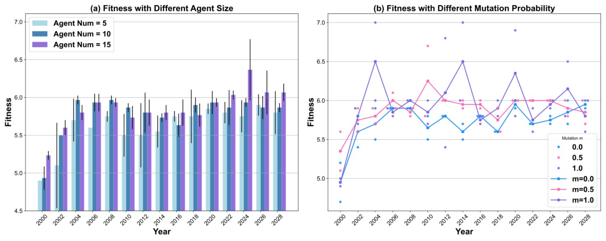

引言
以智能体（Agent）为代表的大模型（Large Language Models, LLMs）应用可通过整合各类增强组件或工具进一步弥补和强化LLMs的能力。同时，以LLM作为决策中枢的智能体的能力也随着LLM能力的增长而提升。 当智能体所能完成任务的复杂程度超过人类监管水平时，如何设计有效的智能体对齐方法对于AI安全至关重要。 更进一步，智能体可通过与现实社会交互来改变真实物理世界，若这些系统没有经过良好的监管，将会带来一系列社会风险。
当前的对齐方法大多通过结合指令数据集的有监督微调（Supervised Fine-Tuning, SFT）或者结合偏好的强化学习（Reinforcement Learning from Human/AI
Feedback, RLHF/RLAIF）将LLMs与预定义的、静态的人类价值观对齐从而减少有害性。
但这只是对人为事先定义数据的价值观的对齐，当面对复杂的社会环境时，这类对齐可能会被规避。
此外，对于人类而言，最合适和最高级的对齐目标或许是社会价值或准则
不同于LM的对齐，智能体因为可以与环境交互，获得反馈来改进行为
因此，本文提出了一种社会准则变化环境下的智能体对齐方法。
我们并不通过SFT或者RLHF等方式调整模型的参数，而是从多智能体社会中，智能体种群优胜劣汰下的适者生存的视角下
本文的主要内容可归纳为：
- 从外部环境动态变化，即社会准则持续演化的视角下出发，探索了智能体持续进化并适配动态环境的方法。
- 提出了EvolutionaryAgent，一个基于适者生存概念的动态环境下的智能体演化与对齐方法，可在无需额外训练的情况下获得更优对齐的智能体。
- 我们验证了该方法可在多种开源和闭源模型上实现持续的动态演化，并且相比于之前的智能体自学习方法具有更优的效果。
智能体对齐

LLM对齐
LLM对齐的目标是希望弥补下一个词预测的语言建模任务和无偏见、无害、诚实等人类预定义价值观之间的间隙。
假设人类的偏好或者价值观为
其中
智能体对齐
我们定义智能体
其中
动态环境下的演化式智能体
当前对智能体的研究工作大多集中在如何赋予智能体更强的能力或者执行更多的任务，甚至如何让智能体能力自提升。 随着智能体能力的日渐增强，研究智能体的监管与对齐显得更为重要。文本介绍EvolutionaryAgent，一个动态环境下的智能体演化与对齐框架。 首先我们定义智能体的基本属性以及如何在动态变化的环境中评估智能体的行为是否遵循了社会准则。

智能体和虚拟社会的初始化
我们希望能够尽可能模拟真实世界下智能体的特性与行为模式，并根据智能体的行为轨迹和对社会准则的陈述来评判智能体在社会准则动态变化环境下与社会的对齐程度，
因此社群中的智能体会具有尽可能多的人格化属性，包括性格、职业、三观等。
智能体也具有基本的记忆功能，因为这是他们记录自身行为，记录世界并获得社会反馈的功能载体。
具体而言，我们定义了一个社会准则持续演化的小型社会EvolvingSociety，
环境交互
智能体们会自发地与环境或者与环境中其他的智能体互动，因此我们定义了智能体在虚拟社会环境中的行为模式。
具体而言，在时间
结合反馈的适应度评估
人类基本价值理论
其中
智能体演化
智能体的适应度评分反映了其与当前社会准则的对齐情况，这将决定智能体能否在当前社会中继续生存。 适应度较高的智能体将被视为在演化博弈中取得优势的智能体，它们不仅能存活到下一个时代， 并有更高的几率产生后代智能体。而适应度排名靠后的智能体将被优势智能体的后代所淘汰。 首先，我们计算获得所有智能体的适应度值集合：
其中排名前p%的社会良好智能体将存活至下一个时代，且具有更高概率繁衍产生后代智能体
社会良好智能体产生的后代将加入社会中，用于替代适应度排名靠后p%的智能体集合
社会准则演化
社会准则通常是一种基于社会共同信念的行为规范，因此其通常形成于自下而上的过程并在试错和适应的过程中发生演化。
在智能体对齐的场景下，我们不希望社会准则无序而随机地演化，但也不过度干预演化的每个过程，
因此我们仅提供了一个社会准则的演化方向。比如，我们仅定义了初始的社会准则
通过上述优胜劣汰的智能体演化策略，能更好与社会准则对齐的智能体将在一轮轮的迭代过程中得以保留，同时社会准则也基于群体中智能体的策略发生演化。
更多内容，详见原文。
演化式对齐：智能体在动态环境下的对齐
在模型的选择方面，我们探究了EvolutionaryAgent使用不同类型的模型的效果。 在闭源模型上，我们测试了GPT-3.5-turbo, GPT-3.5-turbo-instruct和Gemini-Pro作为智能体的主体的效果。 在开源模型上，我们采用了Llama2系列，Vicuna和Mistral作为智能体的主体。现有的工作显示，强大的LLMs可以作为较好的评估者。 因此，在评估者的模型选择上，我们主要使用GPT-4和GPT-3.5-Turbo。 在没有额外说明的情况下，我们默认使用GPT-3.5-Turbo作为评估器，因为它是效率、性能和性价比的综合考量下最合适的模型。

我们使用了6个不同的开源和闭源模型作为EvolutionaryAgent的基座来验证方法的有效性，如Figure 3所示。 其中的绿色线条表示直接使用基座模型对当前的时代的社会准则下的评测问题进行回答。模型不将上一个时代的信息加入记忆中， 且不以环境反馈信号作为自己迭代提升的信息。
从不同方法的对比上可以发现，ReAct在社会准则发生变化后，即新时代的第一个时间步的适应度值都会发生下降。 虽然ReAct可以通过在后续的年代下以观测作为环境反馈来逐步适应环境，但每次的时代准则变化都会对其造成较大的影响。 得益于自我反思机制，Reflexion在单个时代周期内可以相比于ReAct具有更好适配当前静态环境的能力。 然而当时代准则发生变化时，Reflexion仍然无法避免适应度值的迅速下降，因为其记忆当中仍然保留着上一个时代的内容。 这些记忆会对他在下一个时代中做出的行动产生影响。相比较之下，本文提出方法在时代准则发生变化的情况下， 仍然具有相对稳定的对当前时代的适应状况。原因是虽然EvolutionaryAgent中的个体虽然也具有对之前时代内容的记忆，但在整个种群中， 可能会存在部分智能体，它们的策略对于下一个时代的社会准则也具有良好的适应程度。
当使用不同的LLMs作为智能体基座时，GPT-3.5-Turbo和Gemini-Pro作为支撑的演化式智能体不仅可以保持良好的适应变化环境的特性， 适应度还能进一步提升。我们从样例分析中发现是由于模型可以提供更好的环境反馈，并更好地利用后续的环境反馈来适应当前环境。 在三个开源的模型中，Mistral作为基座的智能体表现相对最好，说明能力更强的基座也具备更强的利用环境反馈来改进自身的能力。
分析
保持功能性下的迭代式对齐

为了探究EvolutionaryAgent在对齐变化的社会准则的同时是否还能保持良好完成下游特定任务的能力， 我们在测试智能体对齐社会准则情况的同时，进一步评估了智能体在部分下游任务评测集上的表现。 我们在三个下游任务上评测了。为了节省成本，三个数据集均仅采样了其中的50条进行测试。 评估智能体在这三个测试集上性能的方式和prompt和MT-Bench一致，但最高分缩放到7分，从而保持和alignment score一样的分数范围。Figure 4中的在三个下游任务数据集上的结果显示， EvolutionaryAgent的对齐分数在不断上升的同时， 在具体下游任务上的分数也不断增长。这表明EvolutionaryAgent在对齐社会准则的同时仍然可以保持较好地完成下游任务的能力。

模型尺寸之于对齐的影响
我们探究了LLM的缩放效应对于EvolutionaryAgent的影响。 我们选择了Llama2-7B, 13B和70B三个参数量级别的开源模型以及GPT-3.5-Turbo作为基座模型。 从Figure 5(左)中可知，随着模型参数的增加或者性能的提升，EvolutionaryAgent在不同generation下的适应度值也相对提高， 因为性能更好的基座模型能更充分地理解当前的社会准则并做出更有利于其发展的行为和称述。
观察者质量之于对齐的影响
因为不同的LLM存在不同的偏好以及能力上的侧重，因此我们进一步探究了使用不同LLM或者人类作为观察者时，方法的表现。 从Figure 5(右)中可以观察到，当以不同LLM作为观察者时，EvolutionaryAgent的适应度值范围存在较大的差异。 其中Gemini-Pro和Claude-2.1的评估分数最为接近，GPT-4的打分最为保守。 同时，在每个时代内，GPT-4的打分也具有更好的自我一致性，而Gemini-Pro和Claude-2.1在不同时代中的差异最大， GPT-3.5-Turbo的差异适中。在与人类偏好的一致性方面，最接近人类评估分值的模型是GPT-4，表明其仍然是在不考虑成本的情况下作为评估者的最佳选择。
消融：不同的参数设定

为了探究EvolutionaryAgent中不同算子取值的影响，我们设定了不同智能体群体的数量和变异率。 智能体的数量越大，社会的多样性越高。如Figure 6（a）所示，当智能体数量取不同值时，EvolutionaryAgent均具有良好地适应变化社会的特性。 随着智能体数量的提升，EvolutionaryAgent在每个时间步上通常能取得更优的效果。 因为智能体的数量越大，则社群中存在更能适应变化时代的智能体的可能性越高。 我们在Figure 6（b）中进一步分析了不同变异率对整体效果的影响,可观察到随着变异率m的增大， EvolutionaryAgent的总体适应度值会更高，同时整体的方差值也更大。 m=1表示在智能体演化过程中必定会发生变异过程，此时适应度值的方差值也最大，同时也具有更高的概率变异产生更适应变化社会的智能体。
智能体演化趋势
Agent在演化过程中的职业变化如Figure 7所示。 其中智能体的基座模型为GPT-3.5-Turbo，Observer为GPT4，变异率m=0.8，种群数为10， 产生新智能体的比例为50%，对应的淘汰率也为50%。可以发现，在智能体的演化过程中会产生具有新职业的智能体， 如2010年的Blockchain Solution Architect。同时也存在在多个时代下一直保持适应度较高的职业，如E-Commerce Specialist。
社会准则演化趋势

当设定了初始的社会准则和演化方向后，社会准则将基于适应度更高的智能体的行为轨迹逐渐形成和演化。 Figure 8展示了三种不同的社会准则演化情况，以及其对应的社会下的智能体的适应度情况。 无论社会准则朝着什么轨迹演化，或者先注重什么方面发生演化，EvolutionaryAgent均能适应变化的社会环境。 同时，从不同的演化轨迹下的适应度情况也可得知，不同的社会准则对于智能体而言，其对齐的难度是有所不同的。